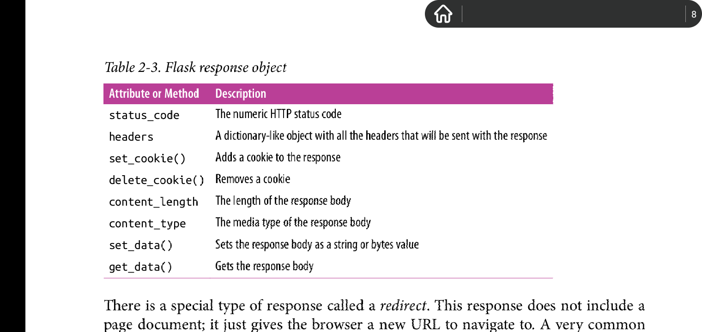

Initialization
所有的Flask app都必须有一个application instance, 网络服务器会传递所有来自客户端的请求给这个实例处理。
创建application instance:
from flask import Flask app = Flask(__name__)其中Flask构造器的参数的作用: 这个参数决定了flask app的位置，app依次去定位属于它的资源文件，比如图片和模板。
Route and View Function
当app instance接受来自服务器分发的请求时，对于每一个请求，app instance必须知道去执行相应的代码，它维护了一张请求路径到python 函数的字典。这种映射就叫做route，这里的python函数叫做view function.
定义rounte的两种方式:
-
app.route(..)装饰器:
@app.route('/') def index(): //当客户端请求www.example.com/时，会执行这个函数。这里的"/"代表网站根目录。 return "<h1>Hello Flask</h1>" -
app.add_url_rule(URL, endpoint name, view function)
这是最传统的方式。
def register(): return "
<p>请注册:</p>" app.add_url_rule("/register", "register", register)
Dynamic Component
比如针对不同用户而变动子网址，称作动态网址。
@app.route("/user/<name>"):
def user(name):
//由尖括号包含的变量，接受以/user为前缀的任何字符串,整个请求网址为动态网址
//user函数里的参数引用name变量。(view function调用时，这个动态变量会被传递给该函数作为参数，所以两者名字可以不相同?).
//任何匹配静态部分网址(‘/user')的请求网址会被映射到这个路由，
//name变量接受该请求网址的动态部分(这里是user后的字符串)
return "<p>welcome {}!</p>".format(name)
动态组件申明: preciding_url/<type:dynamic_compnent_name> 动态组件分类:
- string(默认，类型可省略)
-
int
/id/<int:id> - float
-
path
比较特殊，允许匹配分隔路径的forward slash('/')
A Complete Application
from flask import Flask
app = Flask(__name__)
@app.route('/')
def index():
return "<p>Welcome</p>"
Development Web Server
执行flask run激活调试版网络服务器。该命令查找环境变量FLASK_APP所指定的python文件中包含的applicaton instance.
两种激活方式:
-
命令行式: flask run
激活步骤:
- export FLASK_APP=xx.py
- flask run
- 进入http://localhost:5000,查看网站
-
编程性激活:
app.run()if __name__ == "__main__": app.run()
Dynamic Route
from flask import Flask
app = Flask(__name__)
@app.route('/')
def index():
return "<p>Welcome</p>"
@app.route('/user/<name>')
def user(name):
return "<p>Welcome {}!".format(name)
Debug mode
通过设置环境变量FLASK_DEBUG=1来开启。
该模式有两个特点:
- 当文件被修改后，调试服务器自动restart.
- 调试，在网页上显示报错信息
>> export FLASK_APP=app.py >> export FLASK_DEBUG=1 >> flask run
当通过app.run()激活时，FLASK_APP和FLASK_DEBUG环境变量是无法使用的，且默认调试模式关闭。通过app.run(debug=True)来手动开启调试模式。
Command-Line Options
flask shell
在该application的上下文下开启一个python会话。
flask run
参数:-
flask run --host TEXT
flask run --host 0.0.0.0
上诉指定的0.0.0.0参数极度有用，该命令允许与调试服务器处于同一局域网的任何计算机访问调试服务器，使用--with-threads选项打开调试服务器的基本并发能力,且数据传输能力惊人的快，福利福利。
The Request-Response Cycle
Application and Request Context
当flask接收到来自客户端的请求后，它需要产生一些view function需要的对象，例如request对象，用于封装http请求。
显而易见，flask可以给每一个view function声明一个参数用于接受要处理的request对象，但是每一个view function都要在函数申明里添加这个参数未免麻烦。更棘手地是，如果view function不仅仅需要request这么一个对象来填充实际的网络请求呢?
为了view function不至于因为大量不需要的参数而变得臃肿，flask引入了上下文(context)的概念: 临时性的让某个对象可以从全局被访问。
from flask import request
@app.route('/')
def index():
user_agent = request.headers.get("User-Agent")
return "<p>your browser is {}</p>".format(user_agent)
上述代码中的request对象看上去像全局对象，实际上不可能是。在多线程服务器处理环境中，每一个线程可以在同一时刻处理来自不同客户端的不同请求，因此每一个线程看到的request对象肯定必须不一样。上下文赋予了flask让某一个变量只能在全局上被特定线程访问，而不干扰其他线程。
以下是我的个人理解: 可以将flask提供的request对象想象成全局性的空间，实际的某个网络请求可以被装载进这个全局空间里，并规定此时的全局空间只允许相符合的线程(view function)访问。一旦view function处理完这个请求，flask立即卸载全局空间里的该请求，并加载需要其他线程处理的请求。如此往复。
Context
有两种上下文:
- application context
- request context
下图提供了两种上下文暴露的变量:
flask在将到来的某个请求分发到application instance之前激活了application context 和 request context,并在这个请求被正确处理后，移除这些contexts.只有激活了application context之后，current_application变量和g变量才对某个线程有效，request context也一样。如果没有相应的上下文就访问这些变量，会报错。

Request Dispatching
Flask 接受到请求后，会根据这个请求中的url来查询URL映射表中对应的view function来处理这个请求。
url映射表长这个样子:
上述的(HEAD, OPTION, GET)是被route处理的请求方法(HEAD,OPTION, GET分别是独立的请求方法，其中HEAD和OPTION方法由flask自动管理)。http规范规定所有的请求必须包含一个请求方法，请求方法通常表明客户端要求服务器执行哪种action。flask可以规定每一个route可以处理的请求方法，所以以不同请求方法对请求同一网址，其请求可以被不同route处理。不指定处理何种请求方法的route,默认处理GET方法。
The Request Object
以下是request对象中常用的方法和变量:
Request Hooks
请求钩子允许在每一个请求被处理之前或之后执行同一的处理，避免在每一个view function中编码重复的代码。
装饰器实现了请求钩子。以下是4类请求钩子:
-
before_request
注册一个函数，该函数在每一个请求被处理之前运行。 -
before_first_request
注册一个函数，该函数只在第一个请求被处理前执行，不会响应后续请求。在该函数里可以执行服务器初始化的任务。 -
after_request
注册一个函数，该函数在每一个请求被处理后执行，但是只在该处理未抛出未处理的exception的前提下。 -
teardown_request
类似after_request,但在抛出未处理的exception下，也可以处理此时的request.
Response
以元组构造view function的response.
view function通常返回作为响应的html文本。
view function也可以返回html 加 状态码。flask默认返回200状态码，表示请求已被正确处理。
返回不同的状态码:
@app.route('/')
def index():
return "<h1>TEST</h1>", 400 //这里返回400状态码，表示错误请求。
也可以在加入第三个返回值(response code之后)，a dictionary of headers.
通过make_response()函数可以返回response对象。
from flask import make_response
@app.route('/')
def index():
response = make_response("<p>hello world</p>")
response.set_cookie("answer", "42")
return response
以下是常用的response对象的方法和变量:

重定向(redirect)是一种特殊的响应，它不包含页面内容，只给浏览器新的目标url.
flask提供了一个帮助函数用以产生重定向:
from flask import redirect
@app.route('/')
def index():
return redirect("https://www.baidu.com")
另一种特殊的响应是错误反馈页面，使用函数abort().
from flask import abort
@app.route('user/<string:name>')
def user(name):
if name != "manson":
abort(404) //返回错误页面。这里与redirect不同的是，return abort(404)是错误的格式。
else:
return "<p>Welcome {}!</p>".format(name)
值得注意的是，abort()执行完后，不会将控制返回给view function,因为它抛出了一个exception.
Flask Extensions
flask本身是为了扩展而设计的。它自身不包含重要的功能，比如数据库，用户验证等。你可以选择任何适合你项目的模块通过flask的接口集成到flask中，或者自己写相应的模块。